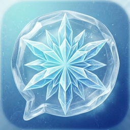

ColdChat
A Twitch chat client for Android and iOS
ColdChat is a free, open-source chat client for Twitch, focused on chat: fast startup, reliable reconnects, emotes from 7TV, BetterTTV and FrankerFaceZ, and image uploads straight from the chat input. ColdChat is not affiliated with or endorsed by Twitch.
Get help or give feedback
Report bugs, ask questions or suggest features in the issue tracker on GitHub. Please include the version shown at the bottom of Settings.
Frequently asked questions
Do I need a Twitch account?
No. Without one you can read chat anonymously. To send messages, use your emotes or block users, sign in through the account button in the top bar. You sign in on Twitch's own page; ColdChat never sees your password.
How do I block or report someone?
Tap the person's name in chat to open their user card. Block adds them to your Twitch block list and hides their messages. Reports are handled by Twitch: Report opens their channel on Twitch, where you can report them.
How do whispers work?
When someone whispers you, a tab with their name appears at the bottom and turns red until you open it.
Type /w name message in any chat, or tap Whisper on a user card, to start one
yourself. Long-press a whisper tab to close or delete the conversation. Twitch only lets accounts with a
verified phone number send whispers, and it offers apps no whisper history: ColdChat shows what arrived while
it was open. If you signed in before ColdChat supported whispers, sign in again once.
My login expired
Twitch logins expire after a while. Tap the banner or the account button and sign in again.
How do I delete my data?
All of ColdChat's data is stored on your device. Remove an account in the account list to delete its login, or uninstall the app to delete everything. To revoke ColdChat's access to your Twitch account, disconnect it under Twitch → Settings → Connections. See the Privacy Policy for details.
Where is the source code?
ColdChat is free software under the GNU Affero General Public License v3.0, based on Chatsen. The code is on GitHub.